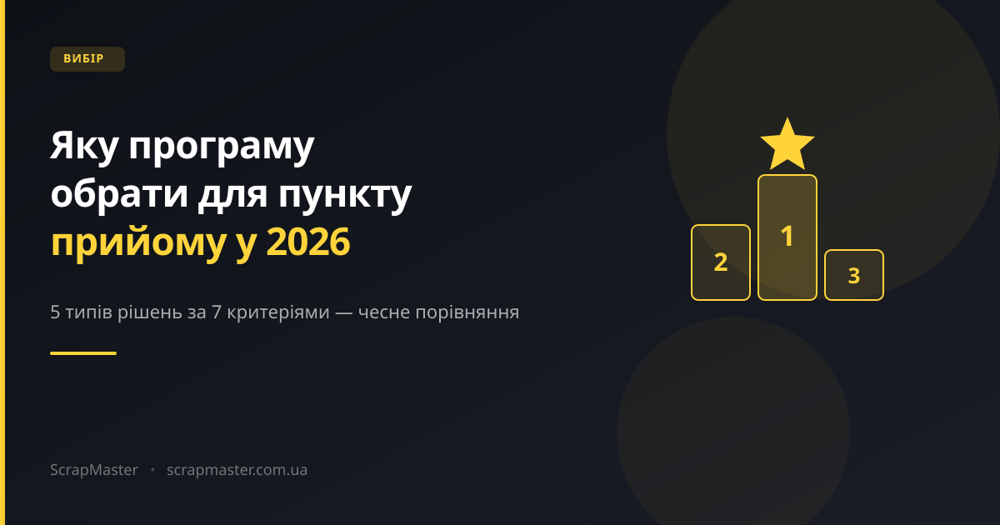

Блокнот, Excel, універсальна CRM, саморобна доробка чи спеціалізована система — розбираємо, що насправді підходить пункту прийому металобрухту, а що лише виглядає рішенням.

«Яка програма найкраща для пункту прийому металобрухту?» — питання, на яке немає однієї правильної відповіді для всіх. Пункт із одним оператором і невеликим обігом та мережа з 10 точок і готівковими розрахунками потребують зовсім різних інструментів.
Тому замість рейтингу «топ-5 програм» ми розберемо це чесніше: які типи рішень взагалі існують на ринку у 2026 році, за якими критеріями їх порівнювати, і коли варто переходити з одного на інше.
Перш ніж порівнювати конкретні варіанти, визначимось, що взагалі має вміти рішення для пункту прийому металобрухту:
Найпростіший варіант — і досі найпоширеніший серед невеликих одноточкових пунктів. Нульова вартість, нуль часу на впровадження. Але вся інформація існує лише в одному екземплярі: загубився блокнот — загубилась історія, а зведення даних за місяць робиться вручну й повільно.
Крок вперед порівняно з блокнотом: можна рахувати формулами, ділитися файлом, робити прості графіки. Але таблицю потрібно заповнювати вручну, вона не рахує залишки в реальному часі, не працює як каса, і зведення кількох пунктів в одну картину — це окрема ручна робота кожного разу.
Деякі власники намагаються адаптувати під облік металобрухту загальну CRM або складську систему, не заточену під цю сферу. Проблема в тому, що там немає готових понять «прийом за вагою», «ціна за кілограм на момент операції» чи «акт приймання» — усе доводиться допилювати під себе, а це час і гроші на кастомізацію, яка все одно не буде галузевою.
Рішення, яке зазвичай зʼявляється, коли власник чи знайомий програміст пише «щось своє». Може непогано закривати поточні потреби, але тримається на одній людині: якщо розробник зникає, оновлювати й підтримувати систему стає нікому. Мобільної та офлайн-версії для оператора на пункті найчастіше просто немає.
Побудована саме під цю галузь: прийом за вагою і ціною, каса, кілька точок, акт приймання, офлайн-режим для оператора. Це категорія, до якої належить і ScrapMaster. Головний мінус — на відміну від блокнота чи Excel, це платний сервіс.
| Критерій | Блокнот | Excel | Універсальна CRM | Саморобна доробка | Спеціалізована система |
|---|---|---|---|---|---|
| Облік операції автоматично | Ні | Частково | Частково | Так | Так |
| Каса й готівка | Ні | Ні | Залежить | Залежить | Так |
| Робота офлайн | Так | Частково | Рідко | Рідко | Так |
| Кілька пунктів в одному кабінеті | Ні | Вручну | Залежить | Залежить | Так |
| Акт приймання з підписом | Ні | Ні | Рідко | Залежить | Так |
| Звіти без ручного зведення | Ні | Ні | Частково | Залежить | Так |
| Час впровадження | 0 | Годин | Тижні | Тижні–місяці | Дні |
Таблиця відображає типову картину по категоріях рішень, а не характеристики конкретного продукту одного виробника — у межах кожної категорії можливості відрізняються.
Чесно: не кожному пункту потрібна спеціалізована система з першого дня. Якщо у вас один пункт, невеликий обсяг операцій, ви особисто приймаєте метал і особисто контролюєте касу — Excel цілком може закривати ваші потреби якийсь час.
Незалежно від того, яке рішення розглядаєте, варто перевірити на демонстрації:
«Найкраща програма» — це не універсальний продукт, а той тип рішення, що відповідає масштабу й процесам конкретного пункту прийому. Блокнот і Excel чесно закривають старт. Але з появою кількох точок, готівкових розрахунків, офлайн-роботи операторів і потреби в акті приймання розрив між ручним обліком і спеціалізованою системою стає відчутним у грошах і часі власника.
ScrapMaster — саме такий спеціалізований варіант: облік операцій, каса, кілька пунктів в одному кабінеті, офлайн-режим для оператора і акт приймання з підписом клієнта.
Запросіть демонстрацію — покажемо систему на прикладах, схожих на ваш пункт прийому.
Запросити демо